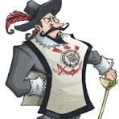

Corinthians nasceu em 1910.

A Fundação e o Time do Povo clube nasceu sob a luz de um lampião, na esquina das ruas José Paulino e Cônego Martins. O nome foi inspirado no Corinthian Football Club da Inglaterra, que fazia excursão pelo Brasil. O primeiro presidente, Miguel Battaglia, afirmou que o time seria do povo e feito por ele. A primeira partida oficial ocorreu em 10 de setembro de 1910, contra o União da Lapa.
 O mascote do Corinthians é o Mosqueteiro. O Corinthians possui vários títulos importantes. Alguns jogadores que marcaram a história do Corinthians.Mascote
Títulos
Ídolos